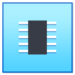

Welcome to Web QEMU Manager
Create a virtual machine, choose its hardware, and attach your own x86_64 ISO or disk image.
No operating system is included. Media stays on this device for the current browser session.

Powered Off
System
- Architecture
- x86_64
- Memory
- Processors
Display
- Output
- Controller
- Standard VGA
Storage
- Media
- Access
- Read-only session
Preparing QEMU display...
WEB QEMU SERIAL CONSOLE\n